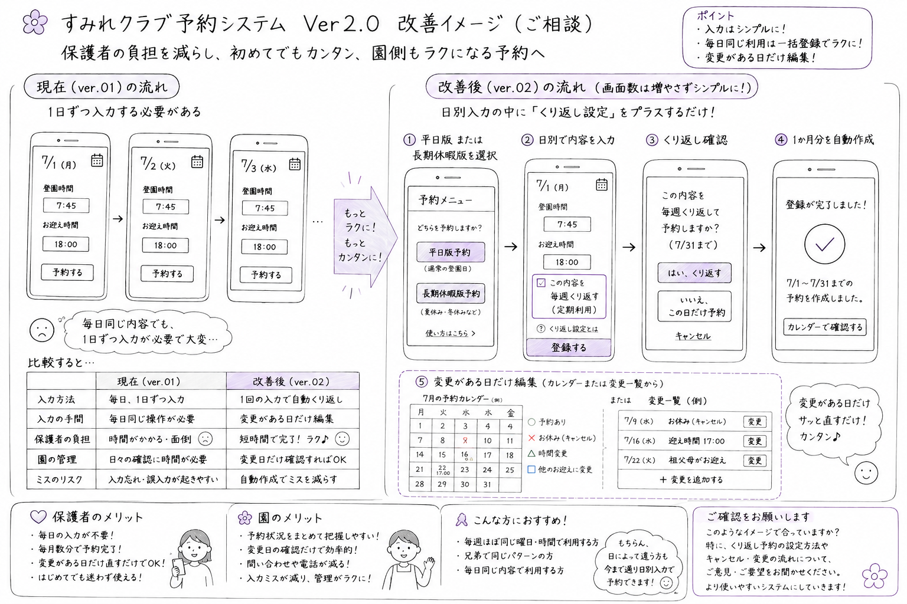

園のDXを支え、システムを育てる。
このプロジェクトは、単に「すみれクラブ」の預かり保育予約システムを作ることだけを
目的としたものではありません。
2024年10月31日、行政から委嘱された幼児教育アドバイザーとして、
マクリン幼稚園のICT・DX化について
提案したことがこのプロジェクトの出発点となりました。
先生方の業務負担を大きく軽減し、より保育に集中できる環境を整えることを本質的なゴールとしています。
🌸 なぜ、このシステムが必要なのか
これまでの預かり保育「すみれクラブ」の運営では、 申し込みの確認や実績の集計、精度が求められる月末の請求書作成に多くの手作業が伴い、 先生方の大きな事務負担となっていました。
- 保護者からの提出書類の回収と、確認に伴う負担
- 日々の預かり時間を手作業で集計する膨大な時間
- 複数の転記作業によるヒューマンエラーのリスク
デジタル化によってこれらの事務作業をスムーズに統合し、 先生方が子どもたちと丁寧に向き合う時間を生み出すことが、 この案内サイトでお知らせしている開発プロジェクトの最大の目的です。
💡 外部サーバーに頼らない、コストゼロで安心の「デジタルの予約カード」管理
一般的なITシステムのように、インターネット上の巨大なデータベース （サーバー）をレンタルすると、毎月の維持費（レンタル代）が高くなってしまいます。
そこで今回の Version 2.0 では、 大掛かりなサーバーを介さず、 無料で利用できる安全なインターネット上の専用キャビネット（GitHub） を採用しました。 運用コストを完全にゼロに抑えながら、データ管理を効率よくデジタル化。 保護者が入力した情報は、園児一人ひとりの 「デジタルの予約カード（JSONファイル）」として個別に安全に保存されます。
全員のデータがひとつの大きな箱にまとまっているのではなく、 園児ごとに「独立したカード」として分かれているため、 万が一ひとつのデータに不具合が起きても、 システム全体が巻き込まれて全員分のデータが一瞬で消えてしまうようなリスクがありません。
🌱 現場に無理のない、育てるDX
案内サイトを大きくすることや、難解な最新技術を導入することが目的ではありません。 大切なのは、現場の先生方が明日から笑顔で使える、 実務に寄り添ったシステムを完成させることです。
先生方の「ここが使いにくい」「ここがもっと楽になってほしい」という声を何よりも大切にしながら、 現場と共にこのシステムを大切に育てていきます。 気づいた点やご希望があれば、ぜひ遠慮なくどんどんお聞かせください。
🌸 予約方法の改善 ― 現場からの提案を受けて
副園長先生より、 保護者・園のスタッフから寄せられたご意見をもとに、 予約方法の改善についてご提案をいただきました。
「日別予約」に加えて「一括登録」を取り入れた場合の画面イメージを、 下のワイヤーフレームにまとめています。

Ver.2.0 予約方法改善案 ― 手書き風ワイヤーフレーム
「1日ずつ予約するのは手間なので、最大5日程度をまとめて予約できるようにしたい」
「1か月分を同じ内容で一括登録できると便利ではないか」
というご意見でした。
また、現在のアプリについては、 「初めてでも考えずに操作できて簡単」、 「園側もラク」 という現場の評価もいただいていました。
そこで開発側では、現在の使いやすさをできるだけ維持しながら、 同じ内容を繰り返し利用する場合の入力負担を減らす方法を検討しました。
日別の予約方法を基本として残しながら、 同じ内容を繰り返し登録できる仕組みを追加します。
1回入力した内容を繰り返し設定することで、 1か月分をまとめて作成し、 変更がある日だけ編集するという使い方を目指します。
この改善案をイメージしやすいよう、 手書き風のワイヤーフレームにまとめ、 副園長先生に確認していただきました。
ご確認の結果、
「図解があるととてもわかりやすいですね。さすがです！！」
「書いてくださった内容のようになれば、とてもやりやすいと思います！」
とのご回答をいただきました。
これを受け、今回作成した ワイヤーフレームを採用して、Ver.2.0の予約方式を正式な設計変更として採用することとしました。
今後は、日別の予約方法を残しながら、 同じ内容を繰り返し登録できる仕組みを組み込み、 定期的に利用されるご家庭の入力負担を減らす方向で開発を進めます。
📘 次のページ
次のページでは、保護者がスマホで行った予約が、 具体的にどのようなステップで園の集計や請求に繋がっていくのか、 「システムの流れ」をご紹介します。